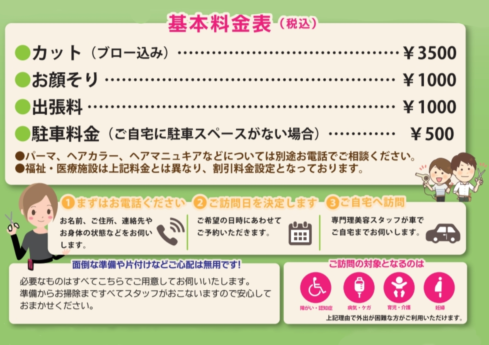

☑訪問理美容について
理美容と言えばヘアサロンに出向いてキレイにしてもらうもの。そう考えられています。
しかし、入院中の方や介護施設に入所しているなどの理由でヘアサロンに行くことが出来ない人も多くいます。
このような入所施設に出張し、お客様の理美容を行うのが「訪問理美容」です。
ヘアカットだけではなくエステも行っているお店もあり、単純に「髪を切るために出向く」のとはまた違ったサービスを提供いたします。
訪問理美容は理容師法などにより次の条件のいずれかを満たしたときのみ、出張することが許されています。
・疾病その他の理由で理美容所に向かうことが不可能な場合
・病院並びに社会福祉施設などにおいて、入所者に施術を行う場合
このような条件が付いていますが、訪問理美容はどのような場所でも清潔で美しい施術を心がけております。
☑訪問理美容について
感染拡大防止のため、利用者の方にもご協力をいただいております。
下記の画像を参照お願いします。
マスクをすると息苦しいなどがありましたら、スタッフまでご相談お願いします。
施設様用料金プラン
詳しくはお問合せください。 
個人宅様用料金プラン